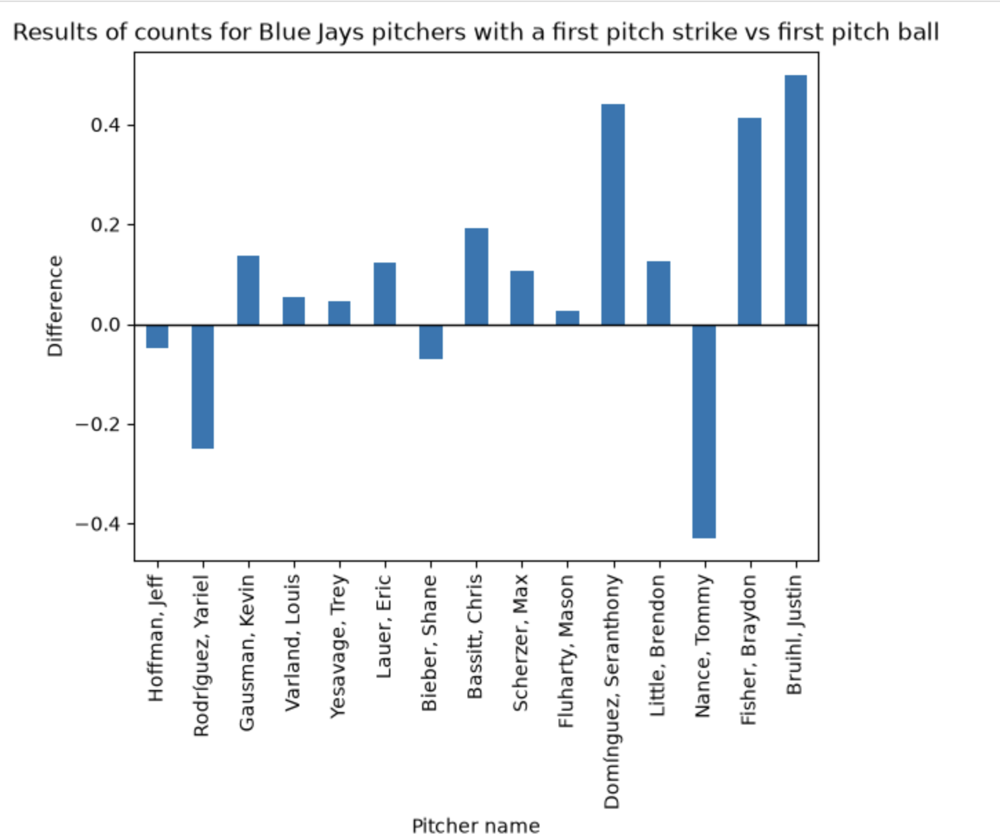

Outs after the first pitch
73.89% vs 63.34%
First-pitch strike vs first-pitch ball; Blue Jays postseason data.
The project recommends a pitch and location for two goals: get a strike or prioritize an out. Explore the team’s findings, then inspect all-count pitch patterns as supporting context.
The final-results table gives each pitcher a strike-priority and an out-priority option. The first-pitch charts below use pitches actually thrown at 0–0.
| Pitcher | 0–0 total pitches | Need a strike | Need an out | Team note |
|---|
How to interpret: These are exploratory, data-supported recommendations, not guaranteed outcomes. The report flags small samples for some pitcher/location combinations; use the situational notes and review sample sizes before treating a choice as reliable.
Recommendations are transcribed from the team’s final-results table; the 0–0 count is the pitcher’s total first pitches, not the sample for each recommended pitch-zone pair. The report flags some recommended combinations with fewer than three observations. Zones refer to Statcast zones. For Eric Lauer’s out-priority recommendation, the source table does not specify the zone.
The interactive charts below summarize all 2,784 cleaned Toronto pitches, not only first pitches. Use them to explore pitch-type and location patterns behind the project, while keeping the first-pitch recommendations above as the main result.
lighter bars: fewer than 30 denominator events · Select a pitcher to update the detail view.
Select a pitch type to isolate its row in the zone map. Each value is paired with its denominator.
Zones 1–9 are inside the strike zone; 11–14 are outside. Counts are shown in each cell. Hover or focus a cell for its full value and sample.
The team’s report compares plate appearances after first-pitch strikes and first-pitch balls.

Team-wide 0–0 results. Use the recommendation filter to inspect one pitcher.
Called strikes + swinging strikes ÷ first pitches. Higher is better.
Expected batting value on tracked contact from the 0–0 pitch. Lower is better.
Catcher’s view. Each cell includes its own sample size. A dash means no tracked observation for that metric; very small samples are unstable.
Explore the report’s velocity analysis by pitcher. The chart uses all counts and 15-pitch intervals during innings 1–9.
Kevin Gausman · 15-pitch intervals
Velocity trends are descriptive. They do not establish fatigue or reduced effectiveness; fastball velocity is most directly interpretable.
Descriptive rates and tests reported in the hypothesis-testing write-up
| Measure | ALDS | ALCS | World Series | Test result |
|---|---|---|---|---|
| Strikeout rate | 24.2% | 27.7% | 24.6% | p = 0.627 · not significant |
| Whiff rate | 29.2% | 29.9% | 26.5% | p = 0.442 · not significant |
| Out rate | 66.7% | 69.1% | 72.4% | p = 0.434 · not significant |
| Fastball velocity | 94.74 mph | 94.29 mph | 93.94 mph | Raw test: p = 0.000439 (significant) Matched-pitcher test: p = 0.150 (not significant) |
Conclusion: There is no convincing evidence that overall pitching effectiveness deteriorated across the postseason. Although raw fastball velocity differed by series, the same-pitcher comparison across all three rounds was not significant (10 matched pitchers). The small descriptive velocity decline is not proof of fatigue.
Whiff rate is whiffs divided by swings; it is not the chance of getting an out or a strike. CSW% is (called strikes + whiffs) divided by pitches. Positive count-adjusted run value favors the pitcher. Lower xwOBA on balls in play favors the pitcher. The team found first-pitch strikes were associated with a higher out percentage, but observational data do not establish causation.
Toronto pitching rows from the 2025 MLB Postseason Pitch-by-Pitch dataset by janus137 on Kaggle. The first-pitch charts filter the original file to 0–0 pitches: 702 Toronto pitches across 15 pitchers. CSW is called strikes plus swinging strikes (including blocked swinging strikes) divided by pitches. Contact xwOBA uses tracked balls in play only. The recommendation table and out-rate tests come from the team’s final results and write-up.
The results cover a single postseason and have uneven, sometimes very small samples by pitcher and location. Batter tendencies and handedness were not fully modeled. Pitch choice depends on count, batter, outs, runners, score, and execution; small descriptive splits should guide further review, not dictate every pitch. The team reported that repeated batter matchups and postseason-round comparisons were not statistically significant, and that velocity declined by about 0.118 mph per 10 pitches.